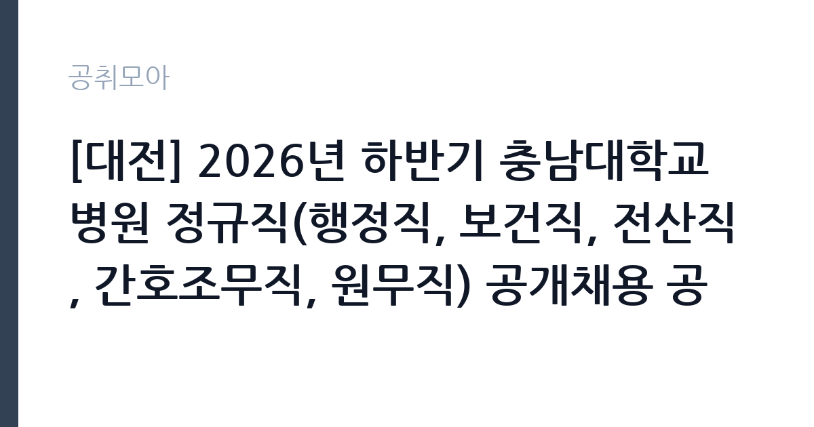

[공공기관] [대전] 2026년 하반기 충남대학교병원 정규직(행정직, 보건직, 전산직, 간호조무직, 원무직) 공개채용 공고
충남대학교병원 · 대전 · 마감 2026-10-21 (D-14) · 출처 잡알리오

한눈에 보는 모집 조건
| 기관 | 충남대학교병원 |
|---|---|
| 공고명 | [대전] 2026년 하반기 충남대학교병원 정규직(행정직, 보건직, 전산직, 간호조무직, 원무직) 공개채용 공고 |
| 고용형태 | 정규직 |
| 근무지 | 대전 |
| 게시일 | 2026-10-07 |
| 마감일 | 2026-10-21 (D-14) |
지원자격, 이렇게 읽으세요
- 공공기관 채용공시
- 세부 조건은 원문 공고문 확인
직종과 분야별 응시자격은 원문 공고문의 첨부파일에서 확인해야 합니다. 병원 행정직은 보통 전공이나 자격 제한이 넓은 편이지만, 보건직과 전산직, 간호조무직은 면허나 관련 자격증이 필수인 경우가 많습니다. 간호조무직은 간호조무사 면허가 기본 요건이며, 보건직은 직렬에 따라 임상병리사나 방사선사, 물리치료사 등 해당 면허가 요구됩니다. 전산직은 정보처리 관련 자격이나 실무 경력을 묻는 경우가 많습니다. 원무직은 접수와 수납, 예약 업무를 맡아 병원 이용객을 직접 응대하므로 서비스 마인드와 기본적인 전산 활용 능력을 평가합니다. 연령과 병역, 결격사유 등 공통 요건도 공고일 기준으로 충족해야 하므로 접수 전에 반드시 원문을 대조하시기 바랍니다.
이 공고의 포인트
이 공고의 가장 큰 매력은 국립대병원 정규직이라는 점입니다. 계약직이나 임시직이 아니라 처음부터 정규직으로 임용되며, 대전 지역 대표 상급종합병원에서 근무하게 됩니다. 행정과 보건, 전산, 간호조무, 원무까지 한 공고에 여러 직군이 포함되어 있어 본인 스펙에 맞는 분야를 골라 지원할 수 있습니다. 하반기 채용이라 연내 임용 일정이 비교적 빠르게 진행될 가능성이 큽니다. 다만 분야별로 응시자격과 제출서류가 다르므로, 관심 분야 첨부파일만 따로 출력해 체크리스트를 만드는 것이 좋습니다.
전형은 어떻게 진행되나
전형은 원문 공고문에 안내된 절차를 따릅니다. 국립대병원 채용은 일반적으로 서류전형과 필기전형, 면접전형 순으로 진행되며, 직군에 따라 인성검사나 실기평가가 추가되기도 합니다. 서류전형에서는 응시자격 충족 여부와 자기소개서, 경력기술서를 평가하므로 자격증 사본과 경력증명서를 미리 준비해야 합니다. 필기전형이 있는 직군은 NCS 직업기초능력과 직무수행능력 평가가 나오는 경우가 많습니다. 면접은 블라인드 방식으로 진행되는 경우가 많아 출신학교나 가족관계 언급을 피하고 직무 중심으로 답변을 준비하시기 바랍니다. 세부 일정과 배점은 원문 공고문에서 확인하시기 바랍니다.
원문에서 확인한 전형 방식
직종 및 분야별 응시자격 첨부파일 참고
이런 분께 추천해요
- 병원 행정과 원무, 접수 수납 업무에 관심 있는 분께 추천합니다. 환자 응대와 행정 실무를 두루 경험할 수 있습니다.
- 간호조무사나 보건의료 면허를 보유한 분께 추천합니다. 국립대병원 경력은 이직 시장에서도 인정받습니다.
- 전산 전공자나 정보처리 자격 보유자에게 추천합니다. 병원정보시스템 실무는 전문성이 쌓이는 분야입니다.
지원 전 체크리스트
- 직종별 응시자격 첨부파일을 내려받아 본인 해당 분야 요건을 표시했습니다.
- 면허증과 자격증 사본, 경력증명서와 졸업증명서 등 제출서류 유효기간을 확인했습니다.
- 자기소개서 항목별 글자 수 제한과 블라인드 기재 금지 사항을 확인했습니다.
- 접수 마감일인 10월 21일 이전에 온라인 접수를 완료하고 접수증을 저장했습니다.
모집 일정과 제출 타이밍
마감일은 2026년 10월 21일입니다. 병원 채용은 접수 마감 직전에 지원자가 몰려 시스템이 느려지는 경우가 많으므로, 늦어도 마감 이틀 전에는 접수를 마치는 것이 안전합니다. 서류전형 합격자 발표와 필기, 면접 일정은 원문 공고문의 전형 일정을 확인하시기 바랍니다. 면허증 재발급이나 경력증명서 발급에는 며칠이 걸릴 수 있으니, 이번 주 안에 발급을 신청해 두시기 바랍니다.
직무 이해하기: 공공기관
대학병원 행정직은 진료 지원 부서의 예산과 인사, 총무 업무를 맡으며, 원무직은 외래 접수와 수납, 입퇴원 수속, 제증명 발급을 담당합니다. 보건직은 검사와 영상, 재활 등 진료 현장을 직접 지원하고, 전산직은 병원정보시스템과 전자의무기록, 네트워크 운영을 맡습니다. 간호조무직은 병동과 외래에서 간호사를 보조하며 투약 보조와 환자 간호, 진료 준비를 수행합니다. 병원 일은 진료과와 협업이 잦아 정확한 인수인계와 기록 습관이 중요하며, 야간과 주말 당직이 있는 부서도 있어 지원 전 근무형태를 확인하시기 바랍니다.
자기소개서 작성 팁
자기소개서에서는 병원이라는 조직의 특성을 이해하고 있음을 보여주는 것이 중요합니다. 행정직 지원자는 정확한 문서 처리와 예산 집행 경험을, 원무직 지원자는 고객 응대 경험과 민원 해결 사례를 구체적으로 쓰시기 바랍니다. 보건직과 간호조무직은 면허 취득 과정과 실습 경험을 직무와 연결하고, 환자 안전을 최우선에 둔 사례를 넣으면 설득력이 커집니다. 전산직은 다뤄본 시스템과 장애 대응 경험을 수치와 함께 제시하시기 바랍니다. 국립대병원의 공공성과 지역 거점병원 역할에 공감한다는 동기를 한 문단으로 정리하면 마무리가 깔끔해집니다.
면접 준비 포인트
면접에서는 직무 이해도와 조직 적합성을 함께 평가합니다. 행정직은 병원 행정의 특수성과 수익 구조에 대한 기본 이해를, 원무직은 불만 고객 응대 시나리오에 대한 답변을 준비하시기 바랍니다. 보건직과 간호조무직은 감염관리와 환자안전 관련 질문이 자주 나오므로 실습 경험을 사례로 정리해 두는 것이 좋습니다. 전산직은 장애 발생 시 대응 절차를 단계별로 설명할 수 있어야 합니다. 국립대병원 면접은 블라인드인 경우가 많으니 출신이나 인맥 언급 없이 직무 역량만으로 답변을 구성하시기 바랍니다.
급여·근무조건 읽는 법
보수는 국립대병원 보수 규정에 따르며, 기본급에 각종 수당과 상여금, 성과급이 더해지는 구조입니다. 기업정보 집계에 따르면 충남대학교병원 일반정규직 평균보수는 7,924만6천원 수준으로 안내되어 있습니다. 간호직 재직자 후기에서는 세전 연봉 약 4,000만원대라는 언급도 있으나, 이는 직군과 호봉, 수당에 따라 달라지는 후기성 정보이므로 참고용으로만 활용하시기 바랍니다. 기본급과 수당, 상여의 정확한 금액은 원문 공고문의 보수표에서 확인하시기 바랍니다. 야간근무와 당직이 있는 부서는 당직수당이 추가되며, 명절휴가비와 정근수당은 별도 지급 기준을 따릅니다. 실수령액은 국민연금과 건강보험, 소득세 공제 후 금액이므로 세전 연봉과 구분해서 이해하시기 바랍니다.
자주 묻는 질문
- 신입도 지원할 수 있습니까
분야별로 다릅니다. 경력 무관으로 뽑는 분야도 있으나 일부 직군은 실무 경력을 요구합니다. 직종별 응시자격 첨부파일에서 본인 분야의 경력 요건을 반드시 확인하시기 바랍니다. - 근무지는 어디입니까
대전 본원입니다. 발령 부서에 따라 외래와 병동, 행정부서로 배치되며, 세부 부서는 임용 후 결정됩니다. 통근 가능 여부는 지원 전에 확인하시기 바랍니다. - 보수는 어느 정도입니까
국립대병원 보수 규정을 적용받습니다. 직군과 호봉에 따라 다르며, 정확한 금액은 원문 공고문의 보수표에서 확인하시기 바랍니다. 수당과 상여, 성과급은 별도 기준에 따라 지급됩니다.
함께 보면 좋은 공고
[공공기관] (2026-7) 부산신용보증재단 제4차 기간제 계약직원 채용공고 — 마감 2026-10-15[공공기관] 강원연구원 육아휴직 대체인력 공개채용 공고 — 마감 2026-10-19[공공기관] 강원연구원 단기근로자(일용직) 공개채용 공고 — 마감 2026-10-19출처: 잡알리오 공개정보를 바탕으로 공취모아가 정리한 안내글입니다. 모집 조건·일정은 변경될 수 있으니 지원 전 반드시 원문 공고문을 확인하세요. 본 글은 정보 제공용이며 합격을 보장하지 않습니다.